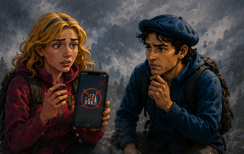

01 / 06
Tri poti, ena gora
Jože, Maria in Pierre se odpravijo vsak po svoji poti. Vsi ciljajo na isti vrh — a gora ne pozna načrtov na papirju.
Projekt v razvoju · Pilot Slovenija
TRI-GLAV je v fazi koncepta in uporabniškega prototipa.
Raziskujemo, kako bi lahko offline zasnova, lokalno znanje, opozorila in jasen varnostni tok pomagali pri boljših odločitvah v slovenskih gorah.
01 / 06
Jože, Maria in Pierre se odpravijo vsak po svoji poti. Vsi ciljajo na isti vrh — a gora ne pozna načrtov na papirju.
02 / 06
Maria izbere krajšo pot. Teren postane strm, kamen je moker. Navigacija kaže pot — a ne opozori na resnično nevarnost.

03 / 06
Omrežje odpove. Klic na pomoč ni več mogoč. Lokacija se ne posodablja. V gori, kjer šteje vsaka minuta, je to resna težava.
04 / 06
Jože vidi, da Maria ni na načrtovani poti. Brez zanesljive povezave je težko vedeti, ali je varna — ali potrebuje pomoč.
05 / 06
Ekipa se najde. Pomoč pride pravočasno. A vprašanje ostane: kaj, če signal ne bi nikoli prišel nazaj?
06 / 06
Trije pohodniki, ena izkušnja — in ideja za aplikacijo, ki bi lahko povezala pot, lokacijo, opozorila in jasen varnostni tok.
Spoznaj razvojno vizijoTRI-GLAV nastaja kot varnostno usmerjen gorski navigator. Najprej želimo z uporabniki preveriti ozek prototip za pripravo poti, offline uporabo in jasnejše odločitve na terenu.
Razvojna vizija
Spodnji prikazi so koncepti, ne dokaz že delujoče aplikacije. Vsako funkcijo bomo označili kot pripravljeno šele po tehničnem in terenskem preverjanju.
Cilj: z manj koraki prikazati nujne informacije in možnost klica 112, kadar je povezava na voljo.
Cilj: preveriti varen in zaseben način deljenja lokacije z izbranimi bližnjimi ali člani ekipe.
Cilj: ključne podatke in pripravljeno pot ohraniti dostopne brez podatkovne povezave. Offline način sam ne more poslati alarma.
Cilj: z dovoljenjem uporabnika shraniti poti in opažanja, ki pomagajo pri prihodnji pripravi.
01 · Koncept glavnega zaslona
Razvojni cilj je prikazati najpomembnejše možnosti brez iskanja po zapletenih menijih.
02 · Koncept poti in navigacije
Prototip bo preveril, kako jasno prikazati načrtovano pot, trenutno pozicijo in omejitve podatkov.
03 · Koncept opozoril
Cilj je uporabniku jasno povedati, kdaj povezave ni, kateri podatki so lokalni in kako sveži so.
04 · Koncept ekipe in poti
Raziskujemo, kako bi lahko uporabnik prostovoljno delil pot in lokacijo samo z izbranimi osebami.
Nujna pomoč
TRI-GLAV je projekt v razvoju, trenutno ni povezan s sistemom 112 in ne pošilja podatkov reševalcem.
V nujnem primeru pokliči 112, če je mogoče vzpostaviti klic prek kateregakoli razpoložljivega mobilnega omrežja. Brez povezave se alarm ali lokacija ne moreta poslati.
TRI-GLAV ne nadomešča uradne gorske opreme, znanja, načrtovanja poti ali navodil pristojnih služb.
Preberi pogosta vprašanja →Pomoč
TRI-GLAV želi povezati pripravo poti, offline zasnovo, lokalno znanje in jasne varnostne informacije. Trenutno je koncept in uporabniški prototip.
To je razvojni cilj, ki še ni verificiran. Lokalno shranjeni podatki bi lahko bili dostopni brez podatkovne povezave, pošiljanje alarma ali lokacije pa brez omrežja ni mogoče.
Izpolni obrazec v sekciji Kontakt. Obrazec pripravi e-pošto v tvojem odjemalcu; sporočilo pošlješ šele, ko tam izbereš »Pošlji«.
Deljenje lokacije je šele razvojni cilj. Pred pilotom bomo določili izrecna dovoljenja, omejen čas deljenja, prejemnike in možnost takojšnjega preklica.
Prijavi zanimanje za prihodnji pilot. Prijava ne pomeni, da je aplikacija že pripravljena ali da boš izbran v testno skupino.